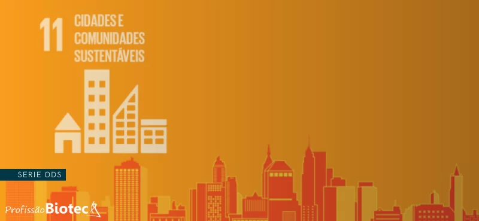

O que é a ODS 11?
A ODS 11 faz parte dos 17 Objetivos de Desenvolvimento Sustentável estabelecidos pela ONU em 2015. Ela visa "tornar as cidades e os assentamentos humanos inclusivos, seguros, resilientes e sustentáveis".
Até 2030, esta ODS busca melhorar significativamente a qualidade de vida nas cidades, com foco especial em questões como transporte, áreas verdes, gestão de resíduos e planejamento urbano sustentável.
Meta 11.6
Nosso jogo "Limpando o Mundo" aborda especificamente a meta 11.6:
"Até 2030, reduzir o impacto ambiental negativo per capita das cidades, inclusive prestando especial atenção à qualidade do ar, gestão de resíduos municipais e outros."
Como o jogo contribui?
- Conscientização: Mostra a importância da coleta adequada de resíduos
- Educação: Ensina sobre diferentes tipos de lixo e seu impacto
- Engajamento: Transforma um tema sério em uma experiência lúdica
- Representação: Dá visibilidade aos trabalhadores da limpeza urbana

4.2 bilhões
de pessoas vivem em cidades hoje (55% da população mundial)
+90%
do crescimento urbano ocorre em países em desenvolvimento
3.5 bilhões
de pessoas precisarão de habitação urbana até 2030